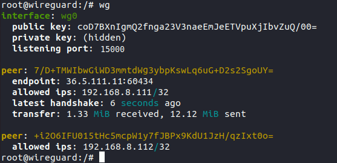

2.2.3 Escenario 2. VPN Red Externa
1. Introducción
En este escenario, se pone en producción el servidor VPN WireGuard en ubuntu server para permitir conexiones VPN desde internet. De esta manera, se creará un túnel VPN de comunicación segura entre cada uno de los clientes (fuera de la red interna de la empresa) y el servidor.
Para implementar este escenario, es necesario que el servidor que se utilice tenga una IP pública. Como es poco habitual que esto ocurra en un entorno de aula, existe la opción de configurar un reenvío de puerto. Para ello, hay que configurar el router para que el puerto 15000 sea redirigido al puerto 15000 de la IP local del servidor que para este caso es: 192.168.0.254.
También se puede hacer el escenario alquilando un servidor público para hacer la prueba. Por ejemplo, servicios en la nube como AWS y Azure ofrecen cuentas con créditos gratuitos para estudiantes.
El dispositivo que se conectará a la VPN es un smartphone Iphone 6S. Una vez conectado el equipo, tendrá la capacidad de aprovechar los recursos disponibles en la red como cualquier otro equipo.
2. Recursos necesarios y escenario
- Servidor ubuntu server con Wireguard instalado.
- Router con acceso a internet.
- Smartphone Iphone 6s con WireGuard instalado.
El esquema de red es el siguiente
3. Preparar router WAN
En primer lugar, hay que configurar en el router del proveedor de internet una redirección de puerto para que las peticiones que se realicen a la ip pública en el puerto UDP 15000 las redirija a la ip/puerto 192.168.0.254:51820 del equipo ubuntu server.

4. Obtener la ip pública del router
Para la configuración de la conexión VPN en WireGuard del dispositivo, es necesario conocer la ip pública para incorporarla como Endpoint. Para saber la ip pública se tienen diferentes formas.
1. Por comando
root@wireguard:/#curl ipinfo.io/ip
2. Por página web.
Accediendo por ejemplo a la url cualesmiip.com.
3. Desde el panel de administrador del router
Si se hace un traceroute a la ip WAN, el resultado que debe dar es de 1 salto.
root@wireguard:/#traceroute 100.70.155.204
4. Conexión con smartphone Iphone 6S
En primer lugar hay que crear el túnel VPN en el dispositivo tal como se describe en el capítulo 2.2.1.1. A continuación, si todo ha ido bien, en el servidor ya se podría ver la conexión establecida.

Obra publicada con Licencia Creative Commons Reconocimiento No comercial Compartir igual 4.0